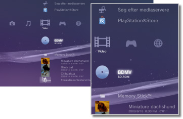

Video > Videokategori
Videokategori
Følgende ikoner vises under  (Video). De viste ikoner afhænger af brugsbetingelserne.
(Video). De viste ikoner afhænger af brugsbetingelserne.

 |
BD-dataredskab | Administrative data, der bruges af Blu-ray Disc™ (BD), gemmes. |
|---|---|---|
 |
Søg efter mediaservere | Dette ikon betyder, at du kan starte en søgning efter DLNA-medieservere, der er tilsluttet samme netværk. |
 |
Medieserver | Dette ikon betyder, at du kan oprette forbindelse til DLNA-medieservere og afspille gemte videofiler. Det viste ikon afhænger af servertypen. |
 |
Videoredigering og -uploader | Rediger videoindhold, der er gemt i PS3-systemets lager. |
 |
BD-ROM / BD-R / BD-RE | Afspil en Blu-ray Disc (BD). |
 |
DVD-ROM / DVD-R / DVD+R / DVD-RW / DVD+RW | Dette ikon betyder, at der afspilles en dvd eller en AVCHD-disk. |
 |
Data Disk | Dette ikon betyder, at du kan afspille videofiler, der er gemt på kompatible optagemedier, f.eks. en cd-r eller dvd-r. |
| Memory Stick™ | Afspil videofiler, der er gemt på Memory Stick™-medier.* | |
 |
SD Memory Card | Afspil videofiler, der er gemt på et SD Memory Card.* |
 |
CompactFlash® | Afspil videofiler, der er gemt på CompactFlash®.* |
 |
PSP™ (PlayStation®Portable) | Afspil videofiler, der er gemt på et PSP™-systems Memory Stick™-medier. |
 |
PSP™ (PlayStation®Portable) | Afspil videofiler, som er gemt i PSP™-go systemets systemlager. |
 |
Digitalkamera | Få vist videofiler, der er gemt i et digitalkamera, som er kompatibelt med PS3™-systemet. |
 |
WALKMAN® / ATRAC Audio Device(WALKMAN®) | Dette ikon betyder, at du kan afspille videofiler, der er gemt på en WALKMAN®/ATRAC Audio Device (WALKMAN®). |
 |
ATRAC Audio Device | Dette ikon betyder, at du kan afspille videofiler, der er gemt på en ATRAC Audio Device. |
 |
USB-enhed | Afspil videofiler, der er gemt på en USB-lagerenhed. |
 |
Filmer fra digitalkamera | Afspil videofiler, der er gemt i DCIM-mappen på lagermediet. |
|
(mappe) | Dette ikon vises for mapper, der er oprettet på lagermediet vha. en PC. |
 |
(filer, der er gemt på systemlageret) | Afspil videofiler, som er gemt på PS3™-systemets systemlager. Der vises miniaturebilleder. |
 |
(data downloadet til systemlageret) | Dette ikon vises for videofiler, der er blevet downloadet til systemlageret. Dataene installeres, og videofilen afspilles, når ikonet vælges. |
| * |
Visse modeller af PS3™-systemet kræver en bestemt USB-adapter (medfølger ikke) ved brug af lagermedier. Hvis lagermedier bruges sammen med en USB-adapter, vises de som |
|---|
 (USB-enhed).
(USB-enhed).Tips
- Salg/udlejning af videoindhold fra PlayStation®Store på PS3™-systemet er ophørt.
- Yderligere oplysninger om DLNA findes i denne vejledning under
 (Indstillinger) >
(Indstillinger) >  (Netværksindstillinger) > [Mediaserverforbindelse].
(Netværksindstillinger) > [Mediaserverforbindelse]. - Hvis systemet skal afspille en Blu-ray Disc, der er beskyttet af ophavsret, ved en opløsning på 1080p, skal du bruge et HDMI-kabel og slutte systemet til en enhed, der er kompatibel med standarden HDCP (High-bandwidth Digital Content Protection).
- Der vises ikke miniaturebilleder for alle typer videofiler, der er beskyttet af ophavsret.
- Når der afspilles en BD, som har indhold med forældrekontrol, begrænses afspilningen iht. det forældrekontrolniveau, der er indstillet i PS3™-systemet. BD-forældrekontrolniveauet kan justeres under (Indstillinger) >
 (Sikkerhedsindstillinger).
(Sikkerhedsindstillinger). - Når der afspilles en dvd, som har indhold med forældrekontrol, kræves der muligvis en adgangskode for at gengive indholdet. Adgangskoden kan indstilles under (Indstillinger) > (Sikkerhedsindstillinger).
- Indhold med forældrekontrol vises som
 . Du kan aktivere afspilning af sådant indhold ved at indtaste en 4-cifret adgangskode. Adgangskoden kan angives eller ændres under (Indstillinger) > (Sikkerhedsindstillinger).
. Du kan aktivere afspilning af sådant indhold ved at indtaste en 4-cifret adgangskode. Adgangskoden kan angives eller ændres under (Indstillinger) > (Sikkerhedsindstillinger). - Disk-låste BD'er vises som
 . Hvis du vil afspille indholdet på sådanne diske, skal du indtaste adgangskoden, der er fastlagt af udvikleren af disken.
. Hvis du vil afspille indholdet på sådanne diske, skal du indtaste adgangskoden, der er fastlagt af udvikleren af disken. - I sjældne tilfælde vil diske og andre medier muligvis ikke fungere ordentligt, hvis de afspilles på PS3™-systemet. Dette skyldes primært variationer i produktionsprocessen eller kodningen af softwaren.
- Hvis der sluttes en enhed, som ikke er kompatibel med HDCP (High-bandwidth Digital Content Protection)-standarden, til systemet vha. et HDMI-kabel, kan der ikke sendes video og/eller lyd fra systemet.
Sådan kan du afspille 3D-indhold
Du skal bruge et 3D-kompatibelt tv, der lever op til 3D-standarden, og et HDMI-højhastighedskabel for at kunne afspille 3D-indhold.
Tips
- Mens Blu-ray 3D™-indholdet afspilles, vil visse dele (f.eks. menuer og undertekster) evt. blive vist på en anden måde i 3D på PS3™-systemet end på andre afspilningsapparater. Det vil dog afhænge af indholdet.
- Ligeledes afhængig af indholdet vil visse BD-J-funktioner evt. ikke kunne afspilles i 3D, eller de vil evt. ikke kunne fungere ordentligt på PS3™-systemet.
- Dolby TrueHD-lyd understøttes ikke under afspilning af Blu-ray 3D™-indhold. I stedet bruges Dolby Digital-formatet.
Lokalt lagringsmedie og Blu-ray Disc (BD)
Hvis du får vist en fejlmeddelelse under en BD-afspilning om, at der ikke er nok plads på det lokale lagringsmedie, skal du slette unødvendige filer på systemlageret for at frigøre plads.
Det lokale lagringsmedie er et datalagringsområde, der er defineret af standarderne for BD-ROM Profile 1.1/2.0. Dataene gemmes på PS3™-systemets systemlager.